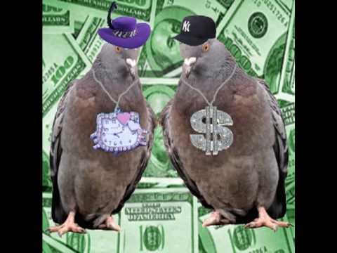

Über uns
Wir sind zwei Typen aus Berlin, studierend an der Hochschule für Technik und Wirtschaft. Uns interessiert alles rund um gutes Essen und wir versuchen euch in unserem Blog, das Beste aus unseren Geschmacklserlebnissen herauszufiltern.


Wir sind zwei Typen aus Berlin, studierend an der Hochschule für Technik und Wirtschaft. Uns interessiert alles rund um gutes Essen und wir versuchen euch in unserem Blog, das Beste aus unseren Geschmacklserlebnissen herauszufiltern.